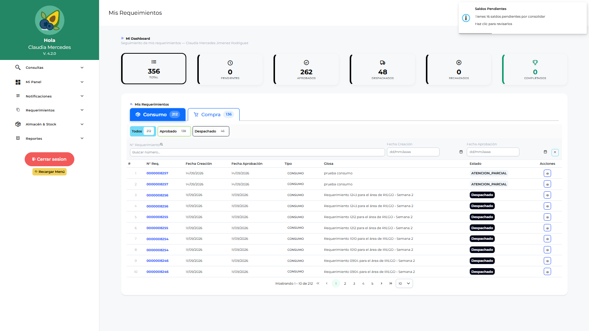
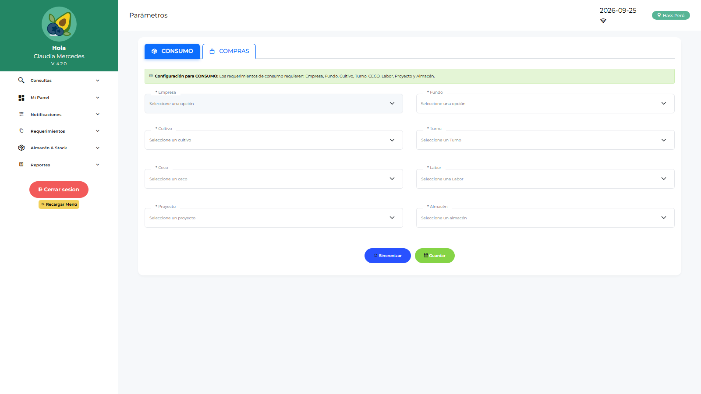

Manual de Usuario — Operativo Campo (OPLOGIST)
| Campo | Valor |
|---|---|
| Código de rol | OPLOGIST |
| Nombre | Operativo de Campo / Solicitante |
| Pantalla inicial | Mis Requerimientos (/main/dashboard-oplogist) |
| Video tutorial | ../video-tutoriales/VIDEO_TUTORIAL_OPLOGIST.html |
1. ¿Quién eres?
Eres el usuario de campo: solicitas materiales, insumos, activos y servicios desde tu fundo/área. Trabajas incluso sin conexión: todo se guarda localmente y se sincroniza después.
2. Acceso
Login → Mis Requerimientos: panel con el estado de tus solicitudes (pendientes, aprobadas, en compra, despachadas).

3. Pantallas disponibles
| Pantalla | Qué haces |
|---|---|
| Mis Requerimientos (dashboard) | Estado de tus solicitudes |
| Parámetros | Sincronizar maestras — paso obligatorio antes de crear requerimientos |
| Notificaciones | Avisos del sistema |
| Requerimientos | Crear solicitudes de ítems, commodities, activos fijos, activos menores, transferencias, consumo |
| Conformidad de Despacho | Confirmas que recibiste el material despachado |
| Conformidad de Servicios | Confirmas que el servicio se ejecutó |
| Devoluciones de Consumo | Devuelves material no utilizado |
| Reingresos | Solicitas reingreso de material al almacén |
| Reporte Requerimientos / Logístico / Catálogo | Consultas |
4. Procedimientos frecuentes
Preparar tu equipo (una vez / periódico)
- Menú → Parámetros.
- Sincronizar: descarga empresas, fundos, almacenes, áreas, cultivos, centros de costo, labores, ítems…
- Sin esto, la pantalla Requerimientos te pedirá sincronizar primero.

Crear un requerimiento
- Requerimientos → Nuevo.
- Tipo: Ítem / Commodity / Activo Fijo / Activo Menor / Transferencia / Consumo.
- Cabecera: área, almacén destino, fecha requerida, glosa.
- Agrega líneas (ítem, cantidad, unidad, centro de costo/labor si aplica).
- Guardar → queda en estado “pendiente de sincronizar” si no hay red.
- Sincroniza cuando tengas conexión → tu requerimiento pasa a aprobación del jefe de área (APLOGIST).
Confirmar recepción (conformidad)
Cuando el almacén despache tu pedido: Conformidad de Despacho → abre el despacho → confirma cantidades recibidas u observa diferencias.
Devolver o reingresar material
- Devoluciones de Consumo: material que no usaste y devuelves.
- Reingresos: material que retorna al almacén (requiere aprobación del jefe de área).
5. Restricciones
- Solo ves tus propios flujos: no hay compras, almacén, aprobaciones ni administración.
6. Problemas comunes
| Problema | Solución |
|---|---|
| “Falta configurar” | Sincroniza en Parámetros primero |
| No puedo cerrar sesión | Tienes requerimientos sin sincronizar — sincronízalos primero |
| Mi requerimiento no avanza | Revisa su estado: debe estar sincronizado y luego aprobado por tu jefe de área |
| Trabajé sin internet | Normal: todo se guardó local; sincroniza al recuperar conexión |